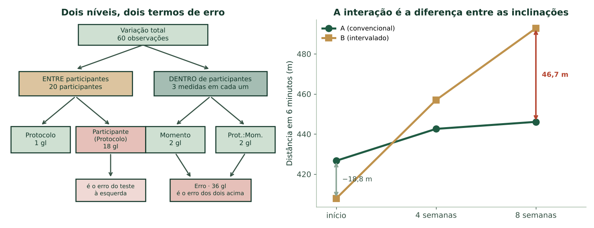
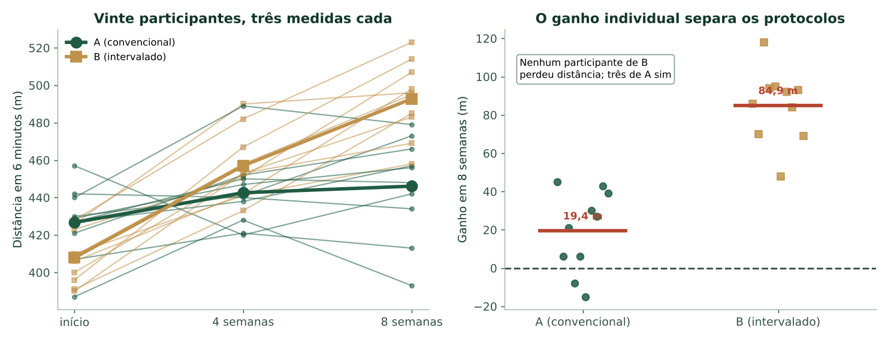

ANOVA mista
Combina um fator entre participantes e um fator medido dentro de cada participante, com dois termos de erro e foco na interação.
Comece por aqui
Um ensaio clínico típico tem a forma: dois grupos de pessoas, cada pessoa medida várias vezes ao longo do tempo. O grupo é um fator entre participantes — cada um está em apenas um deles. O tempo é um fator dentro de participantes — cada um passa por todos os momentos. A ANOVA mista acomoda os dois no mesmo modelo, e a pergunta que realmente interessa não é nenhum dos dois efeitos principais: é a interação entre eles.
Na literatura de experimentação agrícola, esse delineamento é o split-plot: a parcela principal recebe um fator e as subparcelas, outro. A estrutura matemática é a mesma — dois estratos de variação, dois termos de erro — e a terminologia muda apenas conforme a área.
O que é a ANOVA mista
A variação total se divide primeiro em dois estratos. O estrato entre participantes contém o efeito do grupo e, como erro, a variação entre participantes dentro de cada grupo. O estrato dentro de participantes contém o efeito do tempo, a interação grupo × tempo e o seu próprio erro. Cada efeito é testado contra o erro do estrato a que pertence — e é por isso que a tabela traz dois quadrados médios residuais, não um.

O erro do estrato de dentro (192,20 no exemplo) é muito menor que o de entre (817,71), porque dele já foi retirada a variação entre pessoas. É uma propriedade geral: num delineamento misto, o fator dentro e a interação são estimados com bem mais precisão que o fator entre. Vale lembrar disso ao planejar: o fator que mais interessa deve, sempre que o delineamento permitir, ficar dentro.
Pressupostos e como verificá-los
| Pressuposto | Por que importa | Como verificar |
|---|---|---|
| Participantes independentes entre si | A dependência permitida é só dentro do participante. | Delineamento; alocação aleatória aos grupos. |
| Cada participante em um só grupo, medido em todos os momentos | É o que define o delineamento misto. | table(participante, grupo) e table(grupo, momento). |
| Resíduos aproximadamente normais | Sustenta a distribuição F. | shapiro.test nos resíduos. |
| Variâncias homogêneas entre os grupos | O erro do estrato de entre é comum aos grupos. | Levene sobre as médias dos participantes. |
| Esfericidade do fator dentro | Vale para o teste do momento e da interação. | Teste de Mauchly; correções de Greenhouse–Geisser e Huynh–Feldt. |
| Matrizes de covariância iguais entre os grupos | A estrutura de correlação ao longo do tempo deve ser a mesma nos dois grupos. | Teste M de Box. |
A ANOVA mista exige tudo o que a de medidas repetidas exige, mais a homogeneidade das matrizes de covariância entre os grupos. Não basta que as variâncias sejam parecidas: o padrão de correlação entre os momentos também precisa ser. Quando esse pressuposto falha — e ele falha com frequência —, o modelo misto, que permite estruturas de covariância diferentes por grupo, é a saída natural.
Hipóteses e estatística de teste
Três hipóteses nulas, testadas contra dois termos de erro diferentes:
Em que:
- \(a\)
- número de grupos (fator entre)
- \(k\)
- número de momentos (fator dentro)
- \(n\)
- participantes por grupo
- \(QM_{\text{part(grupo)}}\)
- erro do estrato entre, com a(n−1) graus de liberdade
- \(QM_{\text{erro}}\)
- erro do estrato dentro, com a(n−1)(k−1) graus de liberdade
Exemplo numérico, passo a passo
Dois protocolos (A e B), dez participantes cada, três momentos. Médias em metros:
| Protocolo | Início | 4 semanas | 8 semanas | Média |
|---|---|---|---|---|
| A (convencional) | 426,70 | 442,60 | 446,10 | 438,47 |
| B (intervalado) | 407,90 | 457,00 | 492,80 | 452,57 |
| Média do momento | 417,30 | 449,80 | 469,45 | 445,52 |
\[\begin{aligned}SQ_{\text{protocolo}} &= 3 \\ &\quad \times10\bigl[(438{,}47-445{,}52)^2 \\ &\quad +(452{,}57-445{,}52)^2\bigr] \\ &= 2\,982{,}15,\end{aligned}\] com 1 gl, testada contra \(QM_{\text{part(prot)}}=14\,718{,}83/18=817{,}71\):
\[\begin{aligned}SQ_{\text{momento}} &= 20\bigl[(417{,}30-445{,}52)^2 \\ &\quad +(449{,}80-445{,}52)^2 \\ &\quad +(469{,}45-445{,}52)^2\bigr] \\ &= 27\,746{,}63,\end{aligned}\] com 2 gl; \(QM_{\text{erro}}=6\,919{,}07/36=192{,}20\):
A interação, com \(SQ=10\,726{,}30\) e 2 gl, dá \(F_{GT}=5\,363{,}15/192{,}20=27{,}904\) \((p=4{,}8\times10^{-8})\).
Repare que o teste do protocolo usa um erro 4,3 vezes maior que os outros dois. Não é um defeito do método: é o reflexo de que comparar pessoas diferentes é intrinsecamente mais ruidoso do que acompanhar a mesma pessoa.
Propriedades
- Com k = 2 momentos, a esfericidade é automática e a interação equivale a comparar os ganhos entre os grupos com um teste t de duas amostras.
- As correções de esfericidade se aplicam ao fator dentro e à interação, nunca ao fator entre.
- O teste do fator entre é matematicamente idêntico a uma ANOVA de um fator aplicada às médias de cada participante.
- Tamanhos de efeito: \(\eta^2_p\) calculado com o erro do estrato correspondente; \(\eta^2_G\) (generalizado) para comparar entre estudos.
- É equivalente a um modelo misto com intercepto aleatório por participante e covariância composta simétrica.
Como interpretar os resultados
- Comece pela interação. Ela é quase sempre a pergunta do estudo: os grupos evoluíram de forma diferente?
- Se a interação for significativa, não interprete os efeitos principais. Analise os efeitos simples: o fator dentro em cada grupo, e os grupos em cada momento.
- Um efeito principal de grupo não significativo não contradiz uma interação significativa: um pode melhorar e o outro piorar, e a média dos momentos esconder tudo.
- Verifique a comparabilidade inicial dos grupos; uma diferença no momento basal pede uma análise com ajuste (ver ANCOVA).
- Reporte os dois termos de erro e os graus de liberdade de cada teste.
| Elemento | O que informa | Cuidado |
|---|---|---|
| Error: participante | Estrato entre: aqui está o teste do grupo. | Graus de liberdade a(n−1). |
| Error: participante:momento | Estrato dentro: aqui estão momento e interação. | Graus de liberdade a(n−1)(k−1). |
| F da interação | Se os perfis são paralelos. | A linha mais importante. |
| ε de GG e HF | Severidade da violação da esfericidade. | Aplicam-se só ao estrato de dentro. |
| η² parcial e generalizado | Magnitude dos efeitos. | Use o erro do estrato correto. |
| Médias das células com erro-padrão | O resultado observado. | É o que o gráfico de perfis mostra. |
Como executar no R e em Python
Onde executar o código em Python
Não é preciso instalar nada: o Google Colab é um computador na nuvem, gratuito, que executa Python pelo navegador e já traz as bibliotecas usadas aqui (numpy, scipy e matplotlib).
Em R base, aov() com Error(participante/momento) produz a tabela em dois estratos, mas não traz o teste de esfericidade. ez::ezANOVA() e rstatix::anova_test(), informando within e between, devolvem Mauchly, as correções e os tamanhos de efeito. biotools::boxM() testa a igualdade das matrizes de covariância; emmeans fornece os efeitos simples. Para dados faltantes ou covariáveis, lme4::lmer com lmerTest é a rota preferível.
modelo <- aov(distancia ~ protocolo * momento + Error(participante / momento), data = longo)
summary(modelo)
ez::ezANOVA(data = longo, dv = distancia, wid = participante,
within = momento, between = protocolo, detailed = TRUE)
Exemplo de aplicação
Contexto dos dados
Os dados do exemplo são fictícios e foram criados pelo autor. Vinte participantes foram alocados ao acaso em dois protocolos de treinamento — convencional (A) e intervalado (B) — e tiveram a distância no teste de caminhada de seis minutos medida no início, com quatro semanas e com oito semanas.
Código em R
# ANOVA mista (um fator entre e um fator dentro): exemplo completo ----
# Pacotes: stats (base), ez ou rstatix (esfericidade), emmeans (efeitos simples)
# install.packages(c("ez", "rstatix", "emmeans", "lme4"))
# 1. Dados fictícios: distância no teste de caminhada de seis minutos (m)
# 20 participantes alocados ao acaso em dois protocolos, medidos em 3 momentos.
dist <- c(430,441,473, 457,420,442, 427,438,457, 387,428,393, 440,489,479,
442,440,434, 407,421,413, 427,450,448, 429,447,456, 421,452,466,
423,451,507, 426,490,496, 410,441,458, 409,458,495, 391,433,485,
428,482,523, 396,467,514, 406,442,498, 400,453,469, 390,453,483)
longo <- data.frame(
participante = factor(rep(paste0("p", 1:20), each = 3)),
protocolo = factor(rep(c("A", "B"), each = 30)), # ENTRE participantes
momento = factor(rep(c("inicio", "sem4", "sem8"), times = 20),
levels = c("inicio", "sem4", "sem8")), # DENTRO
distancia = dist)
str(longo)
with(longo, table(protocolo, momento))
with(longo, tapply(distancia, list(protocolo, momento), mean))
with(longo, tapply(distancia, list(protocolo, momento), sd))
# 2. O modelo: Error() declara o participante como unidade do fator ENTRE
modelo <- aov(distancia ~ protocolo * momento + Error(participante / momento), data = longo)
summary(modelo)
# 3. Esfericidade e correções, com o pacote ez
library(ez)
ezANOVA(data = longo, dv = distancia, wid = participante,
within = momento, between = protocolo, detailed = TRUE)
# alternativa: rstatix::anova_test(longo, dv = distancia, wid = participante,
# within = momento, between = protocolo)
# 4. Pressupostos
# 4a. normalidade dos resíduos
res <- residuals(lm(distancia ~ protocolo * momento + participante, data = longo))
shapiro.test(res)
# 4b. homogeneidade entre os grupos ENTRE participantes
library(car)
medias_suj <- aggregate(distancia ~ participante + protocolo, data = longo, FUN = mean)
leveneTest(distancia ~ protocolo, data = medias_suj, center = median)
# 4c. homogeneidade das matrizes de covariância: teste M de Box
largo <- reshape(longo[, c("participante", "protocolo", "momento", "distancia")],
idvar = c("participante", "protocolo"), timevar = "momento",
direction = "wide")
library(biotools)
boxM(largo[, 3:5], largo$protocolo)
# 5. Interação significativa: efeitos simples
library(emmeans)
mm <- emmeans(modelo, ~momento | protocolo)
mm
pairs(mm, adjust = "holm") # efeito do momento DENTRO de cada protocolo
pairs(emmeans(modelo, ~protocolo | momento)) # efeito do protocolo EM CADA momento
# 6. Alternativa recomendada: modelo misto, que aceita dados faltantes
library(lme4); library(lmerTest)
mmisto <- lmer(distancia ~ protocolo * momento + (1 | participante), data = longo)
anova(mmisto)
# 7. Gráficos
par(mfrow = c(1, 2))
cores <- ifelse(longo$protocolo == "A", "darkgreen", "orange")
matplot(matrix(longo$distancia, nrow = 3), type = "b", pch = 19, lty = 1,
col = rep(c("darkgreen", "orange"), each = 10), xaxt = "n",
xlab = "Momento", ylab = "Distância (m)")
axis(1, at = 1:3, labels = c("início", "4 sem", "8 sem"))
with(longo, interaction.plot(momento, protocolo, distancia, lwd = 3, pch = 19, type = "b",
col = c("darkgreen", "orange"), ylab = "Distância média (m)"))
par(mfrow = c(1, 1))
A mesma análise em Python, com os resultados
Cole o código em um notebook do Google Colab ↗ e execute com Shift+Enter. Os valores abaixo são a saída desse código.
# Bibliotecas: numpy, scipy e matplotlib (já instaladas no Google Colab)
import numpy as np
from scipy import stats
import itertools
# Dados fictícios: distância no teste de caminhada de seis minutos (m) de 20
# participantes alocados ao acaso em dois protocolos de treinamento, medidos
# no início, com 4 semanas e com 8 semanas.
# Fator ENTRE participantes: protocolo (A = convencional, B = intervalado).
# Fator DENTRO de participantes: momento (3 medidas na mesma pessoa).
A = np.array([[430, 441, 473], [457, 420, 442], [427, 438, 457], [387, 428, 393],
[440, 489, 479], [442, 440, 434], [407, 421, 413], [427, 450, 448],
[429, 447, 456], [421, 452, 466]], dtype=float)
B = np.array([[423, 451, 507], [426, 490, 496], [410, 441, 458], [409, 458, 495],
[391, 433, 485], [428, 482, 523], [396, 467, 514], [406, 442, 498],
[400, 453, 469], [390, 453, 483]], dtype=float)
dados = np.vstack([A, B])
protocolo = np.repeat([0, 1], len(A))
rot_prot = ["A (convencional)", "B (intervalado)"]
momentos = ["início", "4 semanas", "8 semanas"]
a, k = 2, 3
n = len(A) # participantes por protocolo
N = a * n
print(f"{N} participantes ({n} por protocolo) x {k} momentos")
print("protocolo início 4 sem 8 sem média")
cel = np.array([[dados[protocolo == i][:, j].mean() for j in range(k)] for i in range(a)])
for i in range(a):
print(f"{rot_prot[i]:<18} {cel[i,0]:7.2f} {cel[i,1]:7.2f} {cel[i,2]:7.2f} {cel[i].mean():7.2f}")
print(f"{'média do momento':<18} {dados[:,0].mean():7.2f} {dados[:,1].mean():7.2f} "
f"{dados[:,2].mean():7.2f} {dados.mean():7.2f}")
print("\nDesvios-padrão das células")
for i in range(a):
print(f"{rot_prot[i]:<18} " + " ".join(f"{dados[protocolo==i][:,j].std(ddof=1):7.2f}" for j in range(k)))
print("\nGanho individual (8 semanas - início):")
for i in range(a):
gan = dados[protocolo == i][:, 2] - dados[protocolo == i][:, 0]
print(f" {rot_prot[i]:<18} média = {gan.mean():+7.2f} m | DP = {gan.std(ddof=1):6.2f} | valores: {gan.astype(int)}")
# 1. Decomposição da soma de quadrados em duas partes
mg = dados.mean()
m_prot = np.array([dados[protocolo == i].mean() for i in range(a)])
m_mom = dados.mean(axis=0)
SQ_total = ((dados - mg)**2).sum()
# parte ENTRE participantes
SQ_prot = k * n * ((m_prot - mg)**2).sum()
SQ_sujdentro = k * sum(((dados[protocolo == i].mean(axis=1) - m_prot[i])**2).sum() for i in range(a))
# parte DENTRO de participantes
SQ_mom = N * ((m_mom - mg)**2).sum()
SQ_inter = n * ((cel - m_prot[:, None] - m_mom[None, :] + mg)**2).sum()
SQ_erro_d = SQ_total - SQ_prot - SQ_sujdentro - SQ_mom - SQ_inter
gl_prot, gl_sd = a - 1, a * (n - 1)
gl_mom, gl_int, gl_ed = k - 1, (a - 1) * (k - 1), a * (n - 1) * (k - 1)
QM_sd, QM_ed = SQ_sujdentro / gl_sd, SQ_erro_d / gl_ed
F_prot = (SQ_prot / gl_prot) / QM_sd
F_mom = (SQ_mom / gl_mom) / QM_ed
F_int = (SQ_inter / gl_int) / QM_ed
p_prot = stats.f.sf(F_prot, gl_prot, gl_sd)
p_mom = stats.f.sf(F_mom, gl_mom, gl_ed)
p_int = stats.f.sf(F_int, gl_int, gl_ed)
print(f"\nSQ total = {SQ_total:.2f}")
print(f" parte entre participantes: {SQ_prot:.2f} (protocolo) + {SQ_sujdentro:.2f} (participantes no protocolo)")
print(f" parte dentro: {SQ_mom:.2f} (momento) + {SQ_inter:.2f} (interação) + {SQ_erro_d:.2f} (erro)")
print("\nFonte GL SQ QM F p-valor")
print("ENTRE participantes")
print(f" Protocolo {gl_prot:3d} {SQ_prot:9.2f} {SQ_prot/gl_prot:9.2f} {F_prot:7.4f} {p_prot:.5f}")
print(f" Participante(Protocolo) {gl_sd:3d} {SQ_sujdentro:9.2f} {QM_sd:9.2f} <- erro deste teste")
print("DENTRO de participantes")
print(f" Momento {gl_mom:3d} {SQ_mom:9.2f} {SQ_mom/gl_mom:9.2f} {F_mom:7.4f} {p_mom:.3e}")
print(f" Protocolo:Momento {gl_int:3d} {SQ_inter:9.2f} {SQ_inter/gl_int:9.2f} {F_int:7.4f} {p_int:.3e}")
print(f" Erro {gl_ed:3d} {SQ_erro_d:9.2f} {QM_ed:9.2f} <- erro dos dois testes acima")
print(f"Total {N*k-1:3d} {SQ_total:9.2f}")
print("\nSão DOIS termos de erro: cada efeito é comparado ao erro do seu nível.")
# 2. Esfericidade (matriz de covariâncias agrupada dentro dos protocolos)
Sp = sum((n - 1) * np.cov(dados[protocolo == i], rowvar=False) for i in range(a)) / (a * (n - 1))
C = np.array([[1, -1, 0], [1, 1, -2]], dtype=float)
C = C / np.sqrt((C**2).sum(axis=1, keepdims=True))
Sc = C @ Sp @ C.T
pp = k - 1
W_m = np.linalg.det(Sc) / (np.trace(Sc) / pp)**pp
f_corr = 1 - (2*pp**2 + pp + 2) / (6 * pp * gl_sd)
chi2_m = -gl_sd * f_corr * np.log(W_m)
p_m = stats.chi2.sf(chi2_m, pp*(pp+1)/2 - 1)
ev = np.linalg.eigvalsh(Sc)
gg = ev.sum()**2 / (pp * (ev**2).sum())
hf = min(1.0, (gl_sd * pp * gg - 2) / (pp * (gl_sd - pp * gg)))
print(f"\nMauchly: W = {W_m:.5f}, qui-quadrado = {chi2_m:.4f}, gl = 2, p-valor = {p_m:.4f}")
print(f"Epsilon de Greenhouse-Geisser = {gg:.4f} | Huynh-Feldt = {hf:.4f}")
print("Valores-p corrigidos (a esfericidade está atendida: as correções quase não alteram nada)")
for nome, Fv, gl1 in [("Momento", F_mom, gl_mom), ("Protocolo:Momento", F_int, gl_int)]:
print(f" {nome:<18} sem correção: {stats.f.sf(Fv, gl1, gl_ed):.3e} | "
f"GG: {stats.f.sf(Fv, gg*gl1, gg*gl_ed):.3e} | HF: {stats.f.sf(Fv, hf*gl1, hf*gl_ed):.3e}")
# 3. Pressupostos restantes
res = np.empty_like(dados)
for i in range(a):
bl = dados[protocolo == i]
res[protocolo == i] = bl - bl.mean(axis=1, keepdims=True) - bl.mean(axis=0, keepdims=True) + bl.mean()
print(f"\nShapiro-Wilk dos resíduos: W = {stats.shapiro(res.ravel())[0]:.4f}, p-valor = {stats.shapiro(res.ravel())[1]:.4f}")
md = [dados[protocolo == i].mean(axis=1) for i in range(a)]
print(f"Levene nas médias dos participantes (homogeneidade entre protocolos): "
f"p-valor = {stats.levene(*md, center='median')[1]:.4f}")
for j, mm in enumerate(momentos):
gs = [dados[protocolo == i][:, j] for i in range(a)]
print(f" Levene em {mm:<10}: p-valor = {stats.levene(*gs, center='median')[1]:.4f}")
# 4. Tamanho de efeito
print(f"\neta² parcial do protocolo = {SQ_prot/(SQ_prot+SQ_sujdentro):.4f}")
print(f"eta² parcial do momento = {SQ_mom/(SQ_mom+SQ_erro_d):.4f}")
print(f"eta² parcial da interação = {SQ_inter/(SQ_inter+SQ_erro_d):.4f}")
print(f"eta² generalizado da interação = {SQ_inter/(SQ_inter+SQ_sujdentro+SQ_erro_d):.4f}")
# 5. Efeitos simples: a interação significativa obriga a olhar dentro de cada nível
print("\nEfeito do momento DENTRO de cada protocolo")
for i in range(a):
bl = dados[protocolo == i]
SQ_s = n * ((bl.mean(axis=0) - bl.mean())**2).sum()
SQ_e = ((bl - bl.mean(axis=1, keepdims=True) - bl.mean(axis=0, keepdims=True) + bl.mean())**2).sum()
Fv = (SQ_s / (k-1)) / (SQ_e / ((n-1)*(k-1)))
print(f" {rot_prot[i]:<18} F({k-1}; {(n-1)*(k-1)}) = {Fv:7.3f} | "
f"p-valor = {stats.f.sf(Fv, k-1, (n-1)*(k-1)):.3e}")
print("\nDiferença entre protocolos EM CADA momento (teste t de Welch)")
for j, mm in enumerate(momentos):
x, yy = dados[protocolo == 0][:, j], dados[protocolo == 1][:, j]
t, pv = stats.ttest_ind(yy, x, equal_var=False)
s_p = np.sqrt(((n-1)*x.var(ddof=1) + (n-1)*yy.var(ddof=1)) / (2*n-2))
print(f" {mm:<10} B - A = {yy.mean()-x.mean():+7.2f} m | t = {t:+.4f} | "
f"p-valor = {pv:.4f} | d de Cohen = {(yy.mean()-x.mean())/s_p:+.3f}")
# 6. Comparações pareadas dentro de cada protocolo, com ajuste de Holm
print("\nComparações pareadas dentro de cada protocolo (t pareado, ajuste de Holm)")
for i in range(a):
bl = dados[protocolo == i]
pares = list(itertools.combinations(range(k), 2))
pv = [stats.ttest_rel(bl[:, jj], bl[:, ii])[1] for ii, jj in pares]
ordem = np.argsort(pv); holm = np.empty(len(pv)); acum = 0.0
for pos, idx in enumerate(ordem):
acum = max(acum, (len(pv) - pos) * pv[idx]); holm[idx] = min(1.0, acum)
print(f" {rot_prot[i]}")
for m, (ii, jj) in enumerate(pares):
d = bl[:, jj] - bl[:, ii]
print(f" {momentos[jj]} - {momentos[ii]:<10} = {d.mean():+7.2f} m | "
f"p bruto = {pv[m]:.3e} | Holm = {holm[m]:.3e}")
# 7. O que aconteceria ignorando a estrutura de medidas repetidas
Fi, pi = stats.f_oneway(*[dados[:, j] for j in range(k)])
print(f"\nIgnorando o pareamento, o efeito do momento daria F = {Fi:.3f} "
f"(gl = {k-1}; {N*k-k}), p-valor = {pi:.3e}")
print(f"contra F = {F_mom:.3f} (gl = {gl_mom}; {gl_ed}) no modelo misto: a variabilidade")
print(f"entre participantes ({100*SQ_sujdentro/SQ_total:.1f}% do total) deixaria de ser isolada.")
Resultados da execução
20 participantes (10 por protocolo) x 3 momentos
protocolo início 4 sem 8 sem média
A (convencional) 426.70 442.60 446.10 438.47
B (intervalado) 407.90 457.00 492.80 452.57
média do momento 417.30 449.80 469.45 445.52
Desvios-padrão das células
A (convencional) 19.27 19.82 26.88
B (intervalado) 14.06 18.07 19.83
Ganho individual (8 semanas - início):
A (convencional) média = +19.40 m | DP = 21.25 | valores: [ 43 -15 30 6 39 -8 6 21 27 45]
B (intervalado) média = +84.90 m | DP = 18.96 | valores: [ 84 70 48 86 94 95 118 92 69 93]
SQ total = 63092.98
parte entre participantes: 2982.15 (protocolo) + 14718.83 (participantes no protocolo)
parte dentro: 27746.63 (momento) + 10726.30 (interação) + 6919.07 (erro)
Fonte GL SQ QM F p-valor
ENTRE participantes
Protocolo 1 2982.15 2982.15 3.6469 0.07224
Participante(Protocolo) 18 14718.83 817.71 <- erro deste teste
DENTRO de participantes
Momento 2 27746.63 13873.32 72.1831 2.527e-13
Protocolo:Momento 2 10726.30 5363.15 27.9045 4.803e-08
Erro 36 6919.07 192.20 <- erro dos dois testes acima
Total 59 63092.98
São DOIS termos de erro: cada efeito é comparado ao erro do seu nível.
Mauchly: W = 0.99304, qui-quadrado = 0.1188, gl = 2, p-valor = 0.9423
Epsilon de Greenhouse-Geisser = 0.9931 | Huynh-Feldt = 1.0000
Valores-p corrigidos (a esfericidade está atendida: as correções quase não alteram nada)
Momento sem correção: 2.527e-13 | GG: 3.019e-13 | HF: 2.527e-13
Protocolo:Momento sem correção: 4.803e-08 | GG: 5.285e-08 | HF: 4.803e-08
Shapiro-Wilk dos resíduos: W = 0.9901, p-valor = 0.9101
Levene nas médias dos participantes (homogeneidade entre protocolos): p-valor = 0.9431
Levene em início : p-valor = 0.7499
Levene em 4 semanas : p-valor = 0.9738
Levene em 8 semanas : p-valor = 0.4496
eta² parcial do protocolo = 0.1685
eta² parcial do momento = 0.8004
eta² parcial da interação = 0.6079
eta² generalizado da interação = 0.3314
Efeito do momento DENTRO de cada protocolo
A (convencional) F(2; 18) = 4.548 | p-valor = 2.520e-02
B (intervalado) F(2; 18) = 121.666 | p-valor = 3.489e-11
Diferença entre protocolos EM CADA momento (teste t de Welch)
início B - A = -18.80 m | t = -2.4923 | p-valor = 0.0237 | d de Cohen = -1.115
4 semanas B - A = +14.40 m | t = +1.6975 | p-valor = 0.1070 | d de Cohen = +0.759
8 semanas B - A = +46.70 m | t = +4.4214 | p-valor = 0.0004 | d de Cohen = +1.977
Comparações pareadas dentro de cada protocolo (t pareado, ajuste de Holm)
A (convencional)
4 semanas - início = +15.90 m | p bruto = 6.554e-02 | Holm = 1.311e-01
8 semanas - início = +19.40 m | p bruto = 1.796e-02 | Holm = 5.387e-02
8 semanas - 4 semanas = +3.50 m | p bruto = 5.858e-01 | Holm = 5.858e-01
B (intervalado)
4 semanas - início = +49.10 m | p bruto = 2.188e-06 | Holm = 4.377e-06
8 semanas - início = +84.90 m | p bruto = 1.858e-07 | Holm = 5.573e-07
8 semanas - 4 semanas = +35.80 m | p bruto = 1.398e-04 | Holm = 1.398e-04
Ignorando o pareamento, o efeito do momento daria F = 22.372 (gl = 2; 57), p-valor = 6.735e-08
contra F = 72.183 (gl = 2; 36) no modelo misto: a variabilidade
entre participantes (23.3% do total) deixaria de ser isolada.
| Fonte | GL | SQ | QM | F | p |
|---|---|---|---|---|---|
| ENTRE participantes | |||||
| Protocolo | 1 | 2 982,15 | 2 982,15 | 3,647 | 0,0722 |
| Participante(Protocolo) | 18 | 14 718,83 | 817,71 | — | erro do teste acima |
| DENTRO de participantes | |||||
| Momento | 2 | 27 746,63 | 13 873,32 | 72,183 | 2,5 × 10⁻¹³ |
| Protocolo : Momento | 2 | 10 726,30 | 5 363,15 | 27,904 | 4,8 × 10⁻⁸ |
| Erro | 36 | 6 919,07 | 192,20 | — | erro dos dois testes acima |
| Total | 59 | 63 092,98 | — | — | — |
| Elemento | Valor | Leitura |
|---|---|---|
| Mauchly | W = 0,993; p = 0,9423 | Esfericidade atendida. |
| ε de GG / HF | 0,9931 / 1,0000 | As correções praticamente não alteram nada. |
| p da interação com GG | 5,3 × 10⁻⁸ | Igual, na prática. |
| Shapiro–Wilk dos resíduos | W = 0,990; p = 0,9101 | Normalidade atendida. |
| Levene entre protocolos | p = 0,9431 | Homogeneidade atendida. |
| η² parcial (protocolo / momento / interação) | 0,169 / 0,800 / 0,608 | A interação é um efeito grande. |
| η² generalizado da interação | 0,331 | Medida comparável entre estudos. |
| Efeito simples do momento em A | F(2; 18) = 4,548; p = 0,0252 | Melhora modesta. |
| Efeito simples do momento em B | F(2; 18) = 121,666; p = 3,5 × 10⁻¹¹ | Melhora acentuada. |
| B − A no início | −18,80 m; p = 0,0237 | B começa abaixo de A. |
| B − A em 4 semanas | +14,40 m; p = 0,1070 | Já ultrapassou, sem significância. |
| B − A em 8 semanas | +46,70 m; d = 1,98; p = 0,0004 | Vantagem nítida. |
| Comparações em B (Holm) | todas com p ≤ 1,4 × 10⁻⁴ | A melhora continua entre 4 e 8 semanas. |
| Comparações em A (Holm) | p ≥ 0,054 | Nenhuma diferença sustenta o ajuste. |
Leitura: o resultado do estudo está na interação (F = 27,90; p = 4,8 × 10⁻⁸). Os dois protocolos não evoluem do mesmo modo: o intervalado ganha 84,9 m em oito semanas e continua melhorando entre a quarta e a oitava semana, enquanto o convencional ganha 19,4 m e estaciona após a quarta semana.
O efeito principal do protocolo, isolado, não é significativo (p = 0,072) — e esse é exatamente o tipo de resultado que seria mal reportado como “não houve diferença entre os protocolos”. A afirmação é falsa. Ela resulta de uma média entre um momento em que B estava atrás e um momento em que estava bem à frente; ao mediar os três momentos, as duas situações se cancelam. O efeito principal de um fator entre, num delineamento com interação, quase nunca é a quantidade de interesse.
Um detalhe do delineamento merece registro: no momento basal o grupo B estava 18,8 m abaixo do grupo A, com p = 0,024. Com dez participantes por grupo, desequilíbrios assim ocorrem por acaso com frequência. Como a medida inicial é anterior à intervenção, a conduta usual é incluí-la como covariável, analisando a medida final ajustada pelo basal — uma ANCOVA. Aqui, isso só reforçaria a conclusão, já que B partiu de um ponto mais baixo; mas o raciocínio vale para o caso contrário.
Erros comuns
| Erro | Como evitar |
|---|---|
| Usar um único termo de erro | São dois estratos e dois quadrados médios residuais. |
| Interpretar o efeito principal do grupo havendo interação | Ele pode ser não significativo mesmo com os grupos evoluindo de forma oposta. |
| Aplicar correção de esfericidade ao fator entre | As correções valem só para o estrato de dentro. |
| Esquecer o teste M de Box | A ANOVA mista exige covariâncias iguais entre os grupos. |
| Excluir participantes com uma medida faltante | aov() descarta o participante inteiro; prefira um modelo misto. |
| Ignorar diferenças no momento basal | Considere a análise ajustada pelo basal (ANCOVA). |
| Fazer todas as comparações pareadas sem ajuste | Ajuste dentro de cada família de comparações. |
| Confundir fator entre com fator dentro na sintaxe | Só o fator dentro entra em Error(participante/...). |
Alternativas e fluxo de trabalho
| Procedimento | Quando preferir |
|---|---|
Modelo misto (lme4::lmer) | Dados faltantes, momentos irregulares, covariáveis ou covariâncias diferentes entre grupos. É hoje a rota preferida em ensaios clínicos. |
| ANCOVA | Interesse na medida final ajustada pela basal; costuma ter mais poder que analisar ganhos. |
| ANOVA de medidas repetidas | Não há fator entre participantes. |
| ANOVA fatorial | Os dois fatores são entre participantes. |
| MANOVA | Perfil tratado como vetor de respostas, sem supor esfericidade. |
| GEE | Interesse no efeito médio populacional, com resposta não normal. |
| Modelo de curvas de crescimento | O tempo é contínuo e a trajetória individual interessa. |
ANOVA alinhada por postos (ARTool) | Resposta ordinal, mantendo a estrutura mista. |
- Confirme a estrutura: quem está em qual grupo, quem foi medido quando.
- Faça o gráfico de perfis separado por grupo, com as médias em destaque.
- Verifique a comparabilidade dos grupos no momento basal.
- Ajuste o modelo com o termo de erro correto.
- Teste a esfericidade e a homogeneidade das covariâncias.
- Leia a interação primeiro; se significativa, passe aos efeitos simples.
- Reporte os dois termos de erro, os tamanhos de efeito e as médias com erros-padrão.
Referências desta ficha
- MAXWELL, Scott E.; DELANEY, Harold D.; KELLEY, Ken. Designing experiments and analyzing data: a model comparison perspective. 3. ed. New York: Routledge, 2018.
- MONTGOMERY, Douglas C. Design and analysis of experiments. 10. ed. Hoboken: Wiley, 2019.
- KUTNER, Michael H. et al. Applied linear statistical models. 5. ed. Boston: McGraw-Hill Irwin, 2005.
- WINER, B. J.; BROWN, Donald R.; MICHELS, Kenneth M. Statistical principles in experimental design. 3. ed. New York: McGraw-Hill, 1991.
- GREENHOUSE, Samuel W.; GEISSER, Seymour. On methods in the analysis of profile data. Psychometrika, v. 24, n. 2, p. 95-112, 1959.
- BOX, George E. P. A general distribution theory for a class of likelihood criteria. Biometrika, v. 36, n. 3-4, p. 317-346, 1949.
- VICKERS, Andrew J.; ALTMAN, Douglas G. Analysing controlled trials with baseline and follow up measurements. BMJ, v. 323, p. 1123-1124, 2001.
- OLEJNIK, Stephen; ALGINA, James. Generalized eta and omega squared statistics: measures of effect size for some common research designs. Psychological Methods, v. 8, n. 4, p. 434-447, 2003.
- R CORE TEAM. R: a language and environment for statistical computing. Vienna: R Foundation for Statistical Computing, 2026. Disponível em: https://www.r-project.org/. (Função
aovcomError(), pacotestats.) - LAWRENCE, Michael A. ez: easy analysis and visualization of factorial experiments. R package. Disponível em: https://CRAN.R-project.org/package=ez.
- BATES, Douglas et al. Fitting linear mixed-effects models using lme4. Journal of Statistical Software, v. 67, n. 1, p. 1-48, 2015.
- LENTH, Russell V. emmeans: estimated marginal means, aka least-squares means. R package. Disponível em: https://CRAN.R-project.org/package=emmeans.
- POSIT TEAM. RStudio: integrated development environment for R. Boston: Posit Software, PBC. Disponível em: https://posit.co/download/rstudio-desktop/.
- VIRTANEN, Pauli et al. SciPy 1.0: fundamental algorithms for scientific computing in Python. Nature Methods, v. 17, p. 261-272, 2020. DOI: 10.1038/s41592-019-0686-2. (Funções do módulo
scipy.stats.) - HARRIS, Charles R. et al. Array programming with NumPy. Nature, v. 585, p. 357-362, 2020. DOI: 10.1038/s41586-020-2649-2.
- HUNTER, John D. Matplotlib: a 2D graphics environment. Computing in Science & Engineering, v. 9, n. 3, p. 90-95, 2007.
- GOOGLE. Google Colaboratory. Disponível em: https://colab.research.google.com/.
- As figuras desta ficha foram elaboradas pelo autor.

Prof. Dr. Cássius Henrique Xavier Oliveira
Professor · ICTIN/UFLA · Estatística, Confiabilidade e Ciência de Dados.
Conheça minha trajetória e projetos →